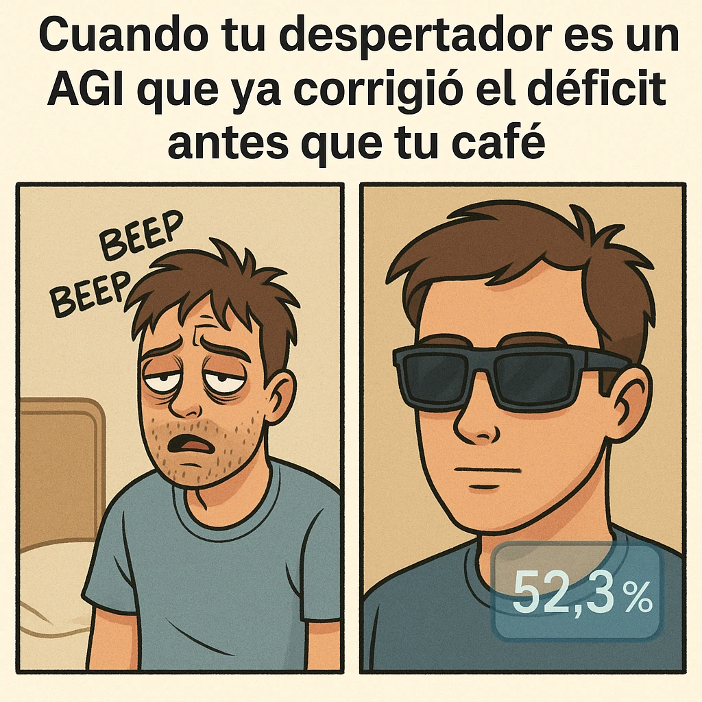

estrategIA #95 ·
La campaña empieza antes del café
El contexto
El relato de 2032 seguía a un jefe de campaña asistido por una IA general. El despertar somnoliento se transforma en seguridad tecnológica: el 52,3 % remite a la probabilidad electoral que aparecía en sus gafas dentro de la ficción, no a una encuesta real.
Publicado en: estrategIA #95 - HistorIAs veraniegas 2025 (3). Margen para dormir: un día en la vida de un jefe de campaña en 2032
Leer el texto de la imagen
Cuando tu despertador es un AGI que ya corrigió el déficit antes que tu café BEEP BEEP 52,3%